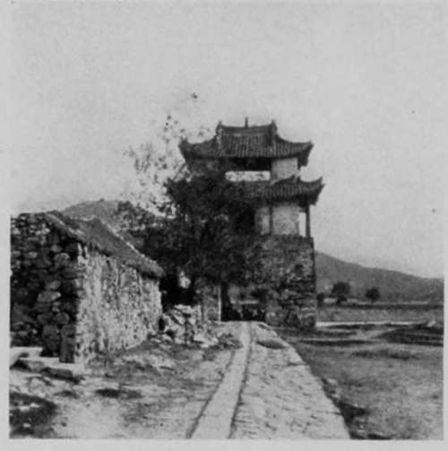

I. The Shadow On The Light Of Asia. Continued
Description
This section is from the book "Foreign Magic: Tales of Every-Day China", by Jean Carter Cochran. Also available from Amazon: Foreign Magic: Tales of Every-Day China.
I. The Shadow On The Light Of Asia. Continued
If Shanghai had been a wonder city to us, it is hard to imagine what it was to Li Sao Tze. Try and realise for yourself what your own sensations would be if you had lived in the third or fourth century in a small country town and were taken, without warning or preparation, to visit a modern city with all its conveniences and inventions. Fancy your excitement, and how you would open your eyes, and what stupid questions you would ask!
Not so Li Sao Tze; she kept her quiet way unabashed and apparently unimpressed. Almost without being told she learned how to turn on the electricity, and though her only light at home had been a feeble wick floating in oil, she never changed her expression when the bright light flooded our rooms. She heard the bells ring at the push of a finger and saw a servant appear as if by magic. She saw carriages run along the smooth streets without horses or men to pull them, whereas, in her native town, the roads were full of mud-holes, and the elite were carried in sedan chairs, the middle-class went on mules, and the poor walked. Yet not one of these new-fangled things disturbed her Oriental calm or produced any signs of amazement. Often I longed to break through that outer shell of reserve and know the thoughts that stirred below it, but my lack of Chinese words, and her idea of good breeding, always prevented such intercourse.
Li Sao Tze was not stupid by any means; she went about her duties in a quiet, competent way, very different from the rougher country women who never could be trained to be good servants. It was surprising how softly and swiftly she did her work on those little cramped feet of hers, for they were not over three inches long. Every day throughout that long summer in the mountains, we would always meet her in the narrow, winding paths, carrying littie Lois. In the evening when we returned home after a picnic or a tea-party we would find Li Sao Tze at the top of the bungalow steps with the child in her arms. She would be standing there quietly, looking over the mountains where range was piled on range towards the glories of the sunset beyond.
In this case truly East and West had met and mingled, for the baby's arms would be twined tightly around Li Sao Tze's neck, and one needed only a quick glance at Li Sao Tze's face to see how she regarded her charge. It was a pretty picture—the dark impassive Oriental features and the laughing yellow-haired mite, with her pink cheeks and dimples. We would explain to Li Sao Tze that with her bound feet the baby was too large and too heavy for her to carry; but as soon as our backs were turned the little tyrant would say, "Li Sao Tze! Bao me!" and that willing slave would hasten to carry her. A Chinese woman can never refuse a child anything, and the exclamation, "Why, she wanted it!" is sufficient excuse for giving a baby anything from a banana to a carving knife.
In August Li Sao Tze came to her mistress about a strange lump which had been troubling her for some time. "Perhaps Mrs. Scott would tell Dr. Scott; they say he is a very clever doctor, and he would give her some foreign medicine that would take it away?"
"But, Li Sao Tze, Dr. Scott would have to see the lump before he could give you the medicine."
"Oh, I never could let him do that; that is not our custom!" Then, with a brighter look, she continued, "But I will show it to you, Mrs. Scott, and you can tell him all about it."
It took two months to persuade Li Sao Tze to see the foreign doctor. By that time the lump had grown considerably and he sadly pronounced the word that makes an American turn sick and faint. He gently explained to her that if she were operated on immediately he might save her life, otherwise she could not live two years. She took the news very quietly and with no sign of fear or emotion. She said she would not be operated upon, for her sons were bitterly anti-foreign and would never allow it, even if she would consent to it.
It was a heavy cloud over our happiness to feel that this gentle creature was marked for such a painful death. Such suffering is bad enough in America, but it is infinitely worse in China, where the sick have no pity shown to them, and the native quacks put the sufferer to horrid torture by way of treatment.
We returned with sad hearts to the inland station. We knew that when we arrived Li Sao Tze's sons would not permit her to remain as amah any longer, much as she would have liked to do so. She had shown strange confidence in being willing to go away with us at all, and had not even taken some earth with her from her native town, as the other amah had done, to mix in her tea to keep her from homesickness and the dangerous feng shui (evil spirits) of a strange place. When we reached our destination it turned out as we had feared. Li Sao Tze was forced to give up her position; her gentle sway was over, and then began a reign of terror for us under Weh Sao Tze, the Militant.
Li Sao Tze continued to come to do our sewing, and we saw her nearly every day. Very shocked was she over Weh Sao Tze's rough ways, and she would reprimand her for her coarse language to the children. She came regularly to the women's meetings, and would repeat the verses so sweetly and so understand-ingly that her teachers were sure she was a true Christian in her heart, though she dared not admit it on account of the harsh attitude of her sons. Of all the hymns she liked best to sing "Jesus Loves Me." "For it rests my heart," she said. Poor Li Sao Tze! It might well rest her heart, for very little love had she known from the day she was born "only an unwelcome girl" up to this time when her sons grudged even food to her. Over her cradle had been sung the usual Chinese lullaby,
If a boy is born, in a downy bed
Let him be wrapped in purple and red;
Apparel bright and jewels bring
For the noble child who will serve the king.
If a girl is born, in coarse cloth wound,
With a tile for a toy, let her lie on the ground;
In her bread or her beer, be her praise or her blame,
And let her not sully her parents' good name.
Yet Li Sao Tze's lot was only the common one of Chinese women. One day she failed to appear at the Women's Class, or for the sewing. When she had been absent for two or three days, Mrs. Scott inquired about her from a neighbour who informed her that Li Sao Tze was ill. She hastened to see her and found the poor woman so very ill that she sent immediately for the foreign doctor, who pronounced the malady to be typhoid fever. He prescribed some remedies and tried to persuade Li Sao Tze's sons to take her to the foreign hospital, where she could have proper treatment, but they would not listen to him and, as soon as his back was turned, threw the medicine out and called in a native quack.
Daily the foreigners visited the wretched hovel which Li Sao Tze called home, bringing soup and medicine. They always found the house filled with a crowd of curious neighbours talking at the top of their lungs, and each one suggesting some peculiar or deadly mixture— a truly restful atmosphere for a fever patient. Li Sao Tze bore it all with her usual patience but grew gradually weaker. At length one night she was very much worse and one of her sons climbed on the roof of the house, while the other went out on the mountain side to represent her spirit. The son on the roof would call to the spirit on the mountain to return, and the son on the mountain would cry in a weird falsetto, "Coming, coming!" and all the while Li Sao Tze lay below and listened.
The next day Li Sao Tze's mistress found her excited out of her former calm. Amidst the noise and confusion the sufferer clutched her friend's hand and whispered that her sons thought that she was going to die and so they had threatened to carry her out on the mountain side, as her spirit would haunt them if she died in the house. Mrs. Scott knew that if they did this she would probably be torn in pieces by wild dogs. She did her best to reassure Li Sao Tze, but there was nothing which she could do to prevent such cruelty, for the sons had absolute power, and could have caused the death of the foreigners if they had interfered with their plans. Mrs. Scott came home heavy-hearted. I wonder if any one would blame her for failing to see any happiness in the Taoist religion on that day?
Autumn Shadows On An Ancient Road.
The Road To Feng Ti Fu, The City That Those Who Are Far Away Love.
The suspense continued for several days, and as we lay on our comfortable beds at night listening to the shrill autumn wind howling down the hillside, we were haunted by thoughts of the awful fate hanging over our gentle Li Sao Tze. We would shiver to think that at that very moment she might be out in the cold alone. Fortunately she rallied towards the last, and then passed away suddenly before her sons could execute their designs. The Christian ceremony so well suited to Li Sao Tze's quiet spirit was not permitted; instead, the wild cry of the hired mourners, the feasting, the burning of paper money, and other rites of a Chinese funeral were her lot. But we drew a sigh of relief that her heart was rested at last and freed from further sufferings.
Now that the long spring evenings have come, Li Sao Tze's daughter-in-law suddenly stops in the middle of her gossiping with the other women of the courtyard and says with a laugh, "Well, I must be off to wail a wail or two on my mother-in-law's grave." With a bowl of food in her hand for the departed spirit, she goes out on the mountain side where Li Sao Tze sleeps, and makes the soft spring night hideous with those blood-curdling wails so heartrending to a stranger, until he realises that such mourning is purely perfunctory. In China comedy and tragedy walk ever hand in hand.
Continue to: